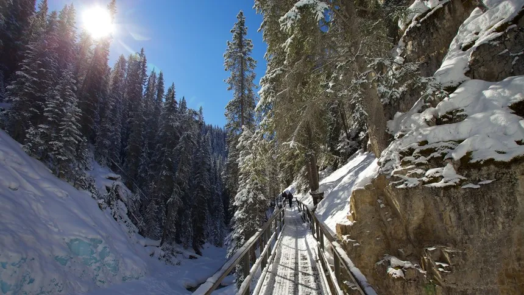
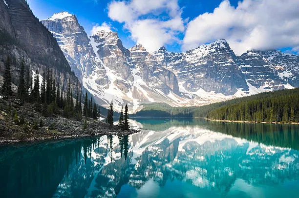
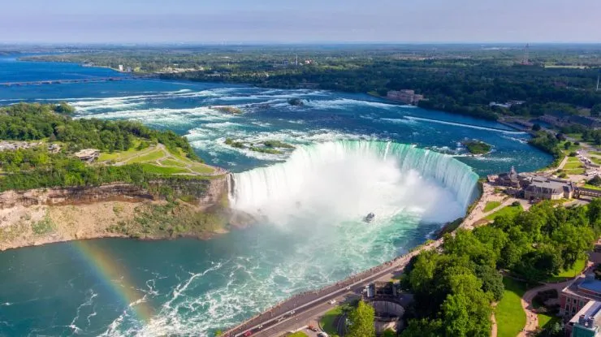
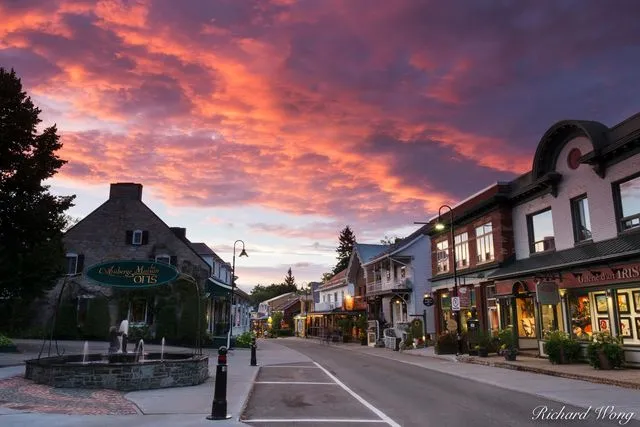

Canadá: Um Lugar que Quero Conhecer
O Canadá é um país repleto de paisagens deslumbrantes, cidades multiculturais e um povo acolhedor. Este lugar incrível combina beleza natural com vida urbana moderna.
Principais Atrações do Canadá

Montanhas Rochosas: Um paraíso natural com paisagens espetaculares e oportunidades para esportes ao ar.

Cataratas do Niágara: Uma das vistas mais impressionantes do Canadá, com força e beleza extraordinárias.

Toronto: Uma metrópole cosmopolita, conhecida pela CN Tower e por sua diversidade cultural.
Cultura e Estilo de Vida
O Canadá é um país multicultural, acolhendo pessoas de todos os cantos do mundo. Sua cultura é um reflexo dessa diversidade.
- Gastronomia diversa e deliciosa.
- Festivais únicos, como o Carnaval de Inverno em Quebec.
- Esportes populares, como hockey e curling.
- O povo canadense é conhecido pela hospitalidade e gentileza.
Curiosidades sobre o Canadá
- O Canadá é o segundo maior país do mundo em área.
- O país possui mais de 31 parques nacionais e áreas protegidas.
- Os canadianos consomem muito maple syrup (xarope de bordo).
- Existem muitos pontos turísticos de inverno incríveis, como Whistler.